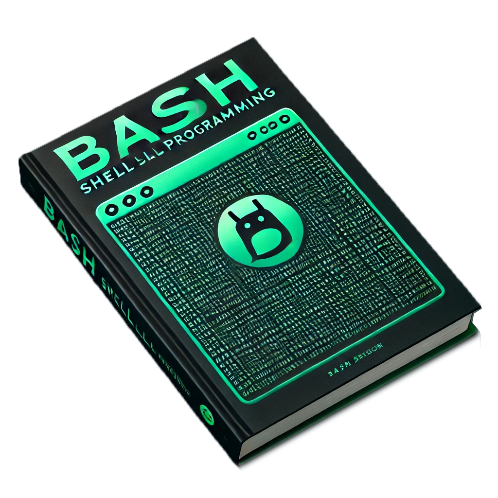

쉘 프로그래밍 (Bash)
BK SYSTEM DEV PART (www.bk123.co.kr)

과정 개요
본 교육 과정은 Bash Shell 프로그래밍 을 활용하여 리눅스 환경에서의 자동화 및 시스템 관리 기법 을 체계적으로 학습하고, 실무에 적용할 수 있도록 설계되었습니다.
Bash는 UNIX 및 Linux 환경에서 가장 널리 사용되는 쉘(Shell)로, 명령어 실행, 스크립트 작성, 프로세스 관리, 시스템 모니터링 등 다양한 작업을 자동화하는 강력한 도구입니다.
본 과정을 통해 쉘 스크립트 기초부터 고급 활용까지 폭넓게 다루며, 실습 중심의 교육을 통해 파일 처리, 조건문 및 반복문, 배치 작업, 네트워크 및 시스템 관리 자동화 등을 직접 구현할 수 있습니다.
최근 DevOps 및 클라우드 환경에서 효율적인 시스템 관리와 자동화의 중요성 이 더욱 커짐에 따라, Bash 프로그래밍은 개발자 및 시스템 엔지니어의 필수 역량 이 되고 있습니다. 본 교육을 통해 리눅스 기반 자동화 기술을 익히고, 다양한 운영 환경에서 즉시 적용 가능한 실무 능력을 단기간에 확보 할 수 있을 것입니다. 🚀
기대 효과
- 리눅스 자동화 및 시스템 관리 역량: Bash 스크립트를 활용하여 파일 및 프로세스 관리, 시스템 모니터링, 백업 자동화 등 다양한 관리 작업을 효과적으로 수행할 수 있음
- 효율적인 업무 자동화: 반복적인 작업을 스크립트로 구현하여 DevOps, 서버 관리, 데이터 처리 등 실무에서 즉시 활용 가능
- 네트워크 및 배포 자동화 능력: 원격 서버 관리, 로그 분석, 배치 작업 스케줄링 등을 통해 효율적인 시스템 운영이 가능
- 다양한 프로젝트 응용: 시스템 유지보수, 클라우드 환경 자동화, 컨테이너 오케스트레이션, 데이터 분석 워크플로우 등 다양한 분야에 활용 가능
- 실무 적용 역량 강화: 실습 중심의 교육을 통해 실제 리눅스 환경에서 Bash 스크립트를 직접 작성하고 운영할 수 있는 실무 능력 확보
교육목차: Bash Shell 프로그래밍
1. Bash 및 리눅스 환경 개요
1) 리눅스 기본 개념
- UNIX/Linux의 개념과 구조
- 파일 시스템 및 디렉토리 구조
- 프로세스 및 메모리 관리
2) 쉘과 쉘 스크립트 개요
- 쉘(Shell)과 쉘 프로그래밍의 역할
- 다양한 쉘 종류 (Bash, Zsh, Fish 등)
- Bash 쉘의 특징 및 장점
2. Bash 스크립트 기본 문법
1) 기본 명령어 및 스크립트 작성
- Bash 스크립트 실행 방법 (#!/bin/bash, chmod +x script.sh)
- 변수 선언 및 활용 ($var, export)
- 사용자 입력 처리 (read, echo)
2) 제어문 및 반복문
- 조건문 (if, case)
- 반복문 (for, while, until)
- 논리 연산 (&&, ||)
3) 함수(Function) 활용
- 함수 정의 및 호출 (function my_func {})
- 매개변수와 반환값 처리
3. Bash 스크립트 활용: 파일 및 프로세스 제어
1) 파일 및 디렉토리 관리
- ls, cd, mkdir, rm, cp, mv
- find, grep, sed, awk를 활용한 데이터 처리
2) 프로세스 및 작업 관리
- 백그라운드 및 포그라운드 작업 (&, jobs, fg, bg)
- 프로세스 상태 조회 (ps, top, htop)
- 신호 제어 (kill, trap)
4. Bash와 시스템 관리 자동화
1) 시스템 로그 분석 및 관리
- dmesg, /var/log, journalctl
- cron을 활용한 자동화 작업 스케줄링
2) 사용자 및 권한 관리
- who, w, id, groups
- chmod, chown, sudo
3) 네트워크 관리 및 자동화
- ping, netstat, ss, ifconfig, ip
- SSH를 활용한 원격 명령 실행 (ssh, scp)
5. 고급 Bash 프로그래밍
1) 스크립트 디버깅 및 오류 처리
- set -x, set -e, trap
- 로그 파일 생성 및 관리
2) 입출력 리디렉션 및 파이프라인
- 표준 입출력 (stdin, stdout, stderr)
- |, > 및 >>를 활용한 데이터 흐름 제어
3) 배열과 연산자
- Bash 배열 사용 (arr=(value1 value2))
- 산술 연산 ($((1+1))), 문자열 처리 (${var//search/replace})
6. 실무 프로젝트 및 실습
1) 파일 백업 및 로그 정리 자동화
2) 시스템 리소스 모니터링 스크립트 작성
3) 서버 원격 관리 및 배포 자동화 스크립트 구현
4) 네트워크 스크립트 작성 (서버 가용성 체크 등)
8. 최종 정리 및 Q&A
- Bash 프로그래밍 핵심 요약
- 추가 학습 자료 및 실전 활용 가이드
- 질의응답 및 프로젝트 발표
본 교육을 통해 참가자들은 Bash를 활용한 **효율적인 시스템 관리 및 자동화 스크립트 개발 역량**을 갖추고, 실무에서 **반복 작업을 자동화하고 운영 효율을 높이는 스킬**을 익힐 수 있습니다. 🚀